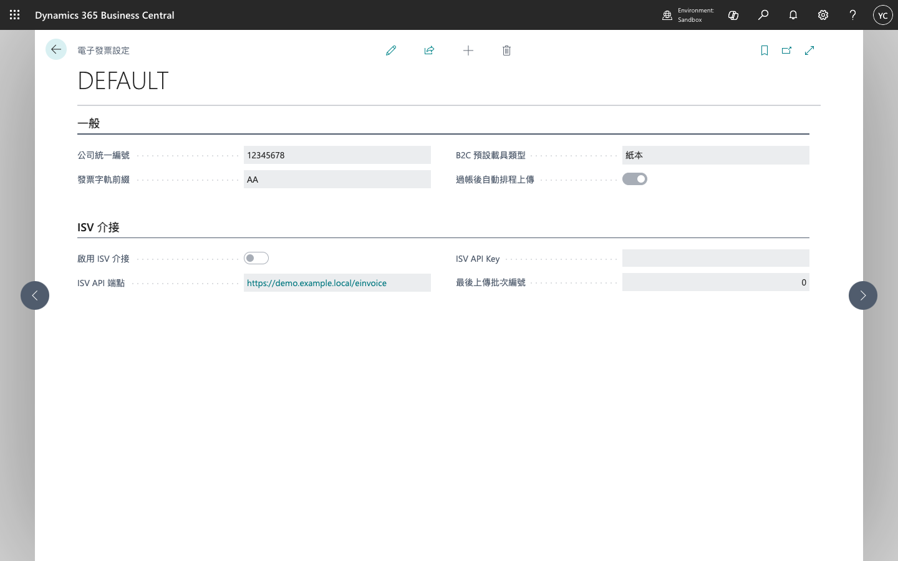

TW E-Invoice Setup（電子發票設定）
開啟頁面
於 Business Central 搜尋列輸入 電子發票設定 或 TW E-Invoice Setup。

程式化設定：PATCH .../twEInvoiceSetups（Custom API）。權限集：TW E-Invoice Admin。
一般欄位
| 欄位 | 說明 |
|---|---|
| Company Tax ID | 公司統一編號（8 碼） |
| Invoice Prefix | 電子發票字軌前綴 |
| Default Carrier Type | B2C 未指定載具時預設 |
| Auto Upload on Post | 過帳後是否自動排程 ISV 上傳 |
ISV 介接
| 欄位 | 說明 |
|---|---|
| ISV Integration Enabled | 是否啟用 ISV HTTP 上傳 |
| ISV Endpoint URL | ISV API 位址（HTTPS） |
| ISV API Key | Bearer Token（選填） |
過帳流程
銷售發票過帳後建立 Log（Pending）。若已啟用 ISV Integration，延伸模組以 HTTP POST 上傳至 Endpoint；否則維持 Pending 待後續處理。
環境建議
| 環境 | ISV Integration | 備註 |
|---|---|---|
| Sandbox（預設） | false | 可先驗證 Log 與欄位 |
| Sandbox（E2E） | true | 指向測試用 ISV Endpoint |
| Production | true | 加值中心或自建閘道正式 URL |